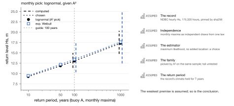
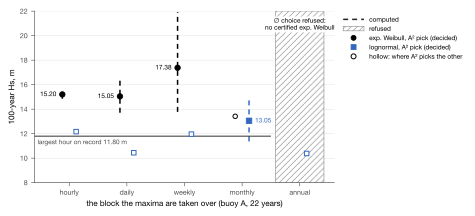
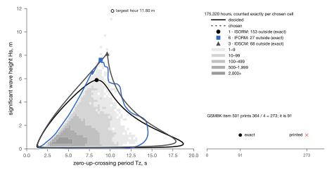
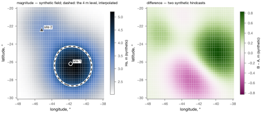

Every mark says what it rests on.
Leadline is a visual grammar for matplotlib and plotly figures. A value an exact decision backs is drawn one way; a fitted or printed number another; a value picked from several the data allow a third. Where nothing could be decided, the figure says so in words instead of drawing a zero.
A leadsman's calls kept two kinds of depth apart: one read at a marked fathom, "by the mark five", and one judged between the marks, "by the deep six". Leadline keeps the same distinction in a figure.

Four strokes
A mark's standing is carried by its stroke and nothing else. Verdicts are words; colour carries neither.
| standing | what it rests on | stroke |
|---|---|---|
| decided | exact arithmetic backs it | solid |
| computed | float, or a number someone printed; nothing decided it | dashed 5 4 |
| chosen | one member of a set the data admits | dotted 1 5, round caps |
| refused | no mark — the void is drawn | no mark: a hatched void and ∅ in words |
At most three series are compared in one figure, each with its own colour and marker, so a greyscale copy loses nothing: ● series 1 ■ series 2 ▲ series 3. The pattern 2 3 is a guide (a ruler, a leader) and says nothing; no other dash pattern is ever drawn.
The rules
- Standing is not a verdict. Words carry verdicts; the stroke carries standing; colour carries neither.
- A pick is chosen. When the data allow several values and one is shown, it is drawn dotted and the figure says "one of several".
- An empty result is ∅ and words, never a zero-height bar, a zero, or a gap.
- One red, × only, beside words, for a counterexample that is shown.
- Ink first. Every figure reads completely in greyscale; a colour always comes with a shape and a word.
- A legend wherever a standing is drawn, in the grammar's own words.
The helpers refuse what the grammar forbids: a stroke for refused, a void or a witness without words, a fourth series, a caller's own colour or dash on a standing line.
Start
git clone https://github.com/carlostoledo1891/leadline && cd leadline
pip install -e ".[all]" # matplotlib, numpy, plotly, cmcramerimatplotlib
import leadline.mpl as lm
lm.use() # or lm.use('grey'): as a mono laser printer prints it
lm.line(ax, T, levels, lm.CHOSEN, series=0) # joins between certified knots: one curve of many
lm.knot(ax, 100, level_100, series=0) # a decided value
lm.whisker(ax, 100, lo, hi, lm.COMPUTED) # a statistical interval
lm.void(ax, x0, x1, y0, y1, words='choice refused: no certified fit')
lm.legend(ax, standings=(lm.COMPUTED, lm.CHOSEN, lm.REFUSED))plotly
import leadline.plotly as lp
lp.use() # the 'warrant' template; legends and colour bars under the plot
fig = lp.figure(title='Return levels')
lp.line(fig, T, levels, lp.CHOSEN, series=0)
lp.knot(fig, 100, level_100, series=0)
lp.legend_standings(fig, (lp.COMPUTED, lp.CHOSEN))Examples
Drawn from public records (an NDBC buoy; dataset A of the environmental-contour benchmark), each in matplotlib for print and in plotly for the screen, each with a greyscale twin.

interactive (plotly)greyscalesource



interactive (plotly)greyscalesource



interactive (plotly)greyscalesource

Colour for fields PROPOSAL
WARRANT's colours are ink, three series identities and one neutral ramp. Metocean figures also colour a quantity spread over a plane: Hs over a basin, a density of sea states, the difference between two hindcasts, a mean direction. leadline.fields proposes three roles, each one of Fabio Crameri's scientific colour maps, chosen by WARRANT's own colour rules (no yellow or orange; legible under colour-vision deficiencies) and measured by tools/validate_fields.py.
| role | map | on paper | measured |
|---|---|---|---|
| magnitude | oslo_r | sequential; lightness monotone; 0 samples of 256 read as yellow or orange; more is darker on paper | |
| difference | bam | diverging; the two sides at 15%/85%: ΔE 27.6 normal, 19.8 protan, 12.9 deutan, 19.1 tritan (thresholds 15 and 8); 0 yellow or orange | |
| direction | bamO | cyclic, the hues of the difference map; 0 yellow or orange |
Of the diverging maps measured, the ones with no yellow or orange that keep both sides apart for every vision: bam. Four rules come with the proposal: a field never carries standing or a verdict; on a coloured field, series are told apart by marker and word (the second-series blue sits ΔE 3.8 from the magnitude map); the witness × over a field sits on a paper casing (the red sits ΔE 1.0 from the difference map); a colour bar names the quantity, its unit and its source. Until the proposal is approved, the neutral ramp is the approved way to draw a field.

Figma
The same inks, strokes, identities, type and (marked proposed) field colours as design tokens: leadline.tokens.json, in the W3C Design Tokens format that Tokens Studio imports. They are generated from the package, never typed.
How Leadline stays WARRANT
The matplotlib register is copied byte for byte from cert-machine's print kit, and PINS.json names every file taken from there with its sha256 and commit. python tools/pins.py --check refuses an edited copy. A change to the grammar starts in cert-machine and its WARRANT page; a change to the field proposal starts here.